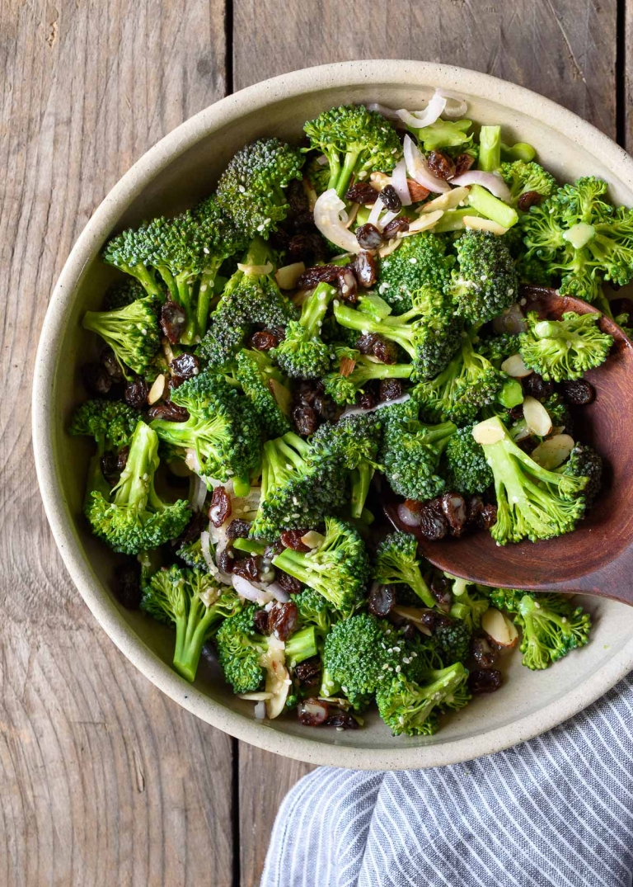

A Healthier Broccoli Salad with Lemon-Tahini Dressing

Description
A quick and simple recipe for healthy broccoli salad – a go to
for cook outs and potlucks! Packed with flavorful broccoli,
almonds, shallots, raisins, and sesame, and topped with a bright
and tangy lemon
tahini
dressing (instead of the traditional mayo), this crunchy veggie
salad is healthy, fresh, and delicious. Gluten free and
vegan-friendly.
Ingredients
FOR THE BROCCOLI SALAD
- 2 medium heads (3/4–1 lb) broccoli
- 1/3 cup sliced almonds
- 1/3 cup raisins or dried cranberries
- 1–2 shallots, shaved or thinly-sliced
- 1–2 tsp white sesame seeds
- optional: 1/4 cup feta or ricotta salata cheese
FOR THE LEMON-TAHINI DRESSING
-
3 Tbsp
tahini
-
3–4 Tbsp
extra-virgin olive oil
- 1/2 lemon, juiced
- 2 Tbsp pure honey or maple syrup
- 1 tsp fresh garlic, finely-minced
- kosher salt and freshly-ground black pepper, to taste
Steps
MAKE THE LEMON-TAHINI DRESSING:
-
In a small bowl, whisk together the
tahini, 3 Tbsp olive oil, lemon juice, and honey until combined. Add
up to another tablespoon of oil to thin as desired. Stir in the
garlic, and season with salt and pepper to taste. Set aside.
-
Or, if saving for later, transfer to an air-tight jar. I like to
reuse old jam jars for this, usually
Bonne Maman jars. May
be made in advance and kept refrigerated for up to two weeks.
ASSEMBLE THE BROCCOLI SALAD:
-
Chop the broccoli into small bite-sized florets. Save the stems
for broccoli stem pesto!
mirin, and stir to combine. Cook for another minute.
-
Add the stock, cover, and bring to a boil. Remove the lid, and
let simmer uncovered for 5 minutes, then add the dried
mushrooms. Simmer gently for another 10 minutes, and season with
salt, to taste.
HOME